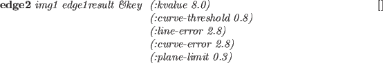

Subsections
Euslisp上のXwindowインターフェースは、'eusx'という
名前でEuslispが呼び出されたとき、実行可能となる。
![[*]](footnote.png) eusxは、起動時に環境変数"DISPLAY"を参照してXserverに接続を試みるため、
自分のXseverに環境変数"DISPLAY"が正しく設定されていなければならない。
eusxは、起動時に環境変数"DISPLAY"を参照してXserverに接続を試みるため、
自分のXseverに環境変数"DISPLAY"が正しく設定されていなければならない。
Euslispには、次の3つのレベルのXwindowインターフェースが定義されている。
(1) Xlib関数, (2) Xlibクラスと(3) XToolKitクラスである。
この節と次のXToolKitの節に記述されている
全てのXwindow関数は、"X"パッケージの中に含まれている。
それらの関数名は、元のXlib関数名から最初の"X"を省いき、全ての文字を大文字に
変更したものとなっている。
例えばXdefaultGCはX:DEFAULTGCと名付けられていて、
X:XDEFAULTGCではない。
Xlib関数は、Xwindowシステムへの低レベルインターフェースで、
foreign関数として定義されている。
これらのXlib関数は、パラメータの型チェックあるいは
パラメータの数のチェックを実行していないため、
十分注意して使用しなければならない。
例えば、すべてのXlibの呼び出しにおいてXserverとの接続を確認するために
x:*display*を引き数として要求する。もし、指定し忘れたならば、Xlibは
エラーを通知し、そのプロセスは死ぬ。
このような不便を避け、オブジェクト指向のインターフェースを作るために、
2番めのレベルのインターフェースであるXlibクラスが備わっている。
この節では、この2番めのレベルのインターフェースに焦点を当てる。
XToolKitと呼ばれるもっと高レベルのXwindowライブラリは、次節で
説明されている。
この節に記述されているクラスは、以下の継承の階層を持っている。
propertied-object
viewsurface
x:xobject
x:gcontext
x:xdrawable
x:xpixmap
x:xwindow
colormap
Xlibのグローバル変数とその他関数
x:*display* [変数]
-
- Xのdisplay ID（整数）
x:*root* [変数]
-
- デフォルトのroot windowオブジェクト
x:*screen* [変数]
-
- デフォルトのscreen ID（整数）
x:*visual* [変数]
-
- デフォルトのvisual ID（整数）
x:*blackpixel* [変数]
-
- 黒色のpixel値 = 1
x:*whitepixel* [変数]
-
- 白色のpixel値 = 0
x:*fg-pixel* [変数]
-
- window作成時に参照されるデフォルトの文字色のpixel値、ふつう*blackpixel*。
x:*bg-pixel* [変数]
-
- window作成時に参照される背景色のpixel値、ふつう*whitepixel。
x:*color-map* [変数]
-
- システムのデフォルトカラーマップ
x:*defaultGC* [変数]
-
- pixmap生成時に参照されるデフォルトgcontext
x:*whitegc* [変数]
-
- 文字色が白色のgcontext
x:*blackgc* [変数]
-
- 文字色が黒色のgcontext
*gray-pixmap* [変数]
-
- (make-gray-pixmap 0.5)の結果。
*gray25-pixmap* [変数]
-
-
1/4のピクセルが*fg-pixel*であり、3/4が*bg-pixel*である16x16のpixmap。
*gray50-pixmap* [変数]
-
- 1/2のピクセルが*fg-pixel*である16x16のpixmap。
*gray75-pixmap* [変数]
-
- 3/4のピクセルが黒色である16x16のpixmap。
*gray25-gc* [変数]
-
- *gray25-pixmap*から作る25%のグレーGC。
*gray50-gc* [変数]
-
- *gray50-pixmap*から作る50%のグレーGC。
*gray75-gc* [変数]
-
- *gray75-pixmap*から作る75%のグレーGC。
*gray* [変数]
-
- "#b0b0b0"
*bisque1* [変数]
-
- "#ffe4c4"
*bisque2* [変数]
-
- "#eed5b7"
*bisque3* [変数]
-
- "#cdb79e"
*lightblue2* [変数]
-
- "#b2dfee"
*lightpink1* [変数]
-
- "#ffaeb9"
*maroon* [変数]
-
- "#b03060"
*max-intensity* [変数]
-
- 65535
font-cour8 [変数]
-
- (font-id "*-courier-medium-r-*-8-*")
font-cour10 [変数]
-
- (font-id "*-courier-medium-r-*-10-*")
font-cour12 [変数]
-
- (font-id "*-courier-medium-r-*-12-*")
font-cour14 [変数]
-
- (font-id "*-courier-medium-r-*-14-*")
font-cour18 [変数]
-
- (font-id "*-courier-medium-r-*-18-*")
font-courb12 [変数]
-
- (font-id "*-courier-bold-r-*-12-*")
font-courb14 [変数]
-
- (font-id "*-courier-bold-r-*-14-*")
font-courb18 [変数]
-
- (font-id "*-courier-bold-r-*-18-*")
font-helvetica-12 [変数]
-
- (font-id "*-Helvetica-Medium-R-Normal-*-12-*")
font-lucidasans-bold-12 [変数]
-
- (font-id "lucidasans-bold-12")
font-lucidasans-bold-14 [変数]
-
- (font-id "lucidasans-bold-14")
font-helvetica-bold-12 [変数]
-
- (font-id "*-Helvetica-Bold-R-Normal-*-12-"
)
font-a14 [変数]
-
- (font-id "*-fixed-medium-r-normal-*-14-*")
x:*xwindows* [変数]
-
- Euslispによる子windowを含んだ全てのwindowのリストを
保持する。
x:*xwindow-hash-tab* [変数]
-
- drawable IDからxwindowオブジェクトを
探すためのハッシュテーブル。
x:nexteventで得られるイベント構造はwindow IDであるため、
x:window-main-loopはこのテーブルを使用して一致するxwindowオブジェクト
を知るためにx:event-windowを呼び出す。
xflush [関数]
-
-
Xlibのコマンドバッファに保有するコマンドをすべてXserverに送る。
XlibバッファがXserverに出力するため、
Xserverに発行されたコマンドは、すぐに実行されない。
これは、ネットワークの渋滞およびプロセスの切替え頻度を減少させるために
必要である。
コマンドの効果を見るためにコマンドバッファを掃き出す方法として、
xflushを使用するかあるいは:flushメッセージをxwindowオブジェクトに
送る。
Xobject [クラス]
:super geometry:viewsurface
:slots
-
- すべてのXwindowに関連するクラスの共通のスーパークラスである。
現在、スロットもメソッドも定義されていない。
Xdrawable [クラス]
:super Xobject
:slots (drawable ; drawable ID
gcon ; this drawable's default graphic context object
bg-color ; background color
width height ; horizontal and vertical dimensions in dots
-
- Xdrawableは、線分や文字列のようなグラフィックオブジェクト
を描くための四角領域を定義する。
Xdrawableは、xwindowやxpixmapのための共通メソッド
を定義するための抽象クラスであり、
このクラスのインスタンスは何の効果も持っていない。
:init id [メソッド]
-
-
idは、このdrawableのIDとしてdrawableスロットに設定される。
新しいGC(graphic context)が生成され、このdrawableオブジェクトの
デフォルトGCとしてgconに設定される。
:drawable [メソッド]
-
- drawable IDを返す。
:flush [メソッド]
-
- Xlibのバッファに保有されるコマンドを掃き出す。
:geometry [メソッド]
-
-
7つの幾何学属性のリストを返す。
そのリストは、root-window-id, x座標, y座標,
幅, 高さ, 枠線の幅, visualの深さである。
:height [メソッド]
-
-
このXdrawableの高さ（y軸方向のドット数）を返す。
:width [メソッド]
-
-
このXdrawableの幅（x軸方向のドット数）を返す。
:gc &rest newgc [メソッド]
-
-
もし、newgcが与えられない場合、現在のGCオブジェクトを返す。
もし、newgcがgcontextのインスタンスなら、
このXdrawableのgcに設定する。
そうでなければ、newgcはメッセージとみなされ、
現在のgcに送られる。
:pos [メソッド]
-
-
このXdrawableの位置を示す整数ベクトルを返す。
位置は親windowの相対位置としていつも定義され、
windowマネージャの仲介のもとにルートwindowの直接の子windowとして
生成されたwindowは、ルートwindowの本当の位置に関わらず、環境の
タイトルwindowの固定座標を返す。
:x [メソッド]
-
- このXdrawableの親windowとの相対的な現在のx座標を返す。
:y [メソッド]
-
- このXdrawableの親windowとの相対的な現在のy座標を返す。
:copy-from drw [メソッド]
-
-
drwは、他のdrawableオブジェクト(Xwindowまたはpixmap)である。
drwの内容がこのXdrawableにコピーされる。
:point x y &optional (gc gccon) [メソッド]
-
-
の位置にオプションのgcで点を描く。
:line x1 y1 x2 y2 &optional (gc gcon) [メソッド]
-
-
(x1,y1)から(x2,y2)へオプションのgcを用いて
線分を描く。x1, y1, x2, y2は整数でなければならない。
:rectangle x y width height &optional (gc gcon) [メソッド]
-
-
(x,y)を中心としてwidthの幅とheightの高さを持つ
四角形を描く。
:arc x y width height angle1 angle2 &optional (gc gcon) [メソッド]
-
-
(x,y)を中心としてwidthの幅とheightの高さを持つ
四角形に内接する楕円の円弧を描く。angle1が始まりの角度を示し、
angle2が終わりの角度を示す。これらの角度の単位はラジアンである。
:fill-rectangle x y width height &optional (gc gcon) [メソッド]
-
-
四角領域を埋める。
:fill-arc x y width height angle1 angle2 &optional (gc gcon) [メソッド]
-
-
円弧の中を埋める。
:string x y str &optional (gc gcon) [メソッド]
-
-
(x,y)の位置から文字列strを表示する。背景は、書かない。
:image-string x y str &optional (gc gcon) [メソッド]
-
-
文字列strを表示する。文字列は、背景色で満たされる。
:getimage &key :x :y :width :height (:mask #ffffffff) (:format 2) [メソッド]
-
-
serverからximageを取り、ピクセルデータを文字列として返す。
serverから送られるピクセルデータは、一端 Xlibのximage構造に蓄積される。
その後、行毎に文字列にコピーされる。
ximage構造は、自動的に破壊される。
:getimageにより得られた画像文字列は、pixel-imageを作るために
使用できる。また、18.6節に書かれているようにpbmフォーマットのファイルに
書き込むことができる。
:putimage image &key :src-x :src-y :dst-x :dst-y :width :height ((:gc g) gc) [メソッド]
-
-
このXdrawableの指定された位置にimageを表示する。
imageは、文字列あるいはximage構造へのアドレスポインターである。
:draw-line from to [メソッド]
-
-
:lineメソッドと同じである。
他のviewsurfaceクラスとの互換性を提供できる。
:line-width &optional dots [メソッド]
-
-
このXdrawableのデフォルトGCの線の幅を設定する。
:gc :line-widthメッセージの使用を推薦する。
:line-style &optional dash [メソッド]
-
-
このXdrawableのデフォルトGCの線スタイルを設定する。
:gc :line-styleの使用が好まれる。
:color &optional c [メソッド]
-
- このXdrawableの色を設定する。
:clear [メソッド]
-
-
全画面を消去する。この関数は、:clear-areaを呼び出す。
:clear-area &key :x :y :width :height :gc [メソッド]
-
-
:fill-rectangleメソッドを用いて四角領域を消去する。
Xpixmap [クラス]
:super Xdrawable
:slots
-
- pixmapは、画像バッファあるいは背景のパターンとしてしばしば用いられる
drawableである。xwindowと異なり、xwindowにコピーされるまで
pixmap自身を見ることはできないし、pixmapはどんなイベントも発生しない。
:init id [メソッド]
-
- このpixmapを初期化する。
:create &key (:width 500) (:height 500) (:depth 1) (:gc *defaultgc*) [メソッド]
-
-
デフォルトGCとして:gcを持つ、width
 heightのpixmapを作成する。
heightのpixmapを作成する。
:create-from-bitmap-file fname [メソッド]
-
-
fileで指定されるbitmapファイルからpixmapを作る。
:write-to-bitmap-file fname [メソッド]
-
-
このpixmapの内容をfnameで指定されるbitmapファイルに書き込む。
このファイルは、:create-from-bitmap-fileメソッドで
pixmapを作り、読み戻すことができる。
:destroy [メソッド]
-
-
このpixmapを破壊し、X resourceを開放する。
Xwindow [クラス]
:super Xdrawable
:slots (parent subwindows backing-store)
-
- Xwindowは、画面の見える四角領域を定義する。
これは、text-windowやグラフィックオブジェクトを描くためのcanvas
だけでなく、windowというよりはむしろグラフィックオブジェクトのような
たくさんのpanel-itemやscroll-barsからも継承される。
:create &key ( (:parent *root*) [メソッド]
(:x 0) (:y 0) (:size 256) (:width size) (:height size) (:border-width 2)
(:save-under nil) (:backing-store :always) (:backing-pixmap nil)
(:border *fg-pixel*) (:background *bg-pixel*)
(:map T) (:gravity :northwest)
(:title "WINDOW") (:name title)
(:font)
:event-mask (:key :button :enterLeave :configure :motion)
-
- xwindow生成し、初期化する。
:parentが与えられたとき、このwindowは:parentの子windowとして
生成され、:parentのsubwindowsリストに蓄積される。
:x, :y, :size, :width, :heightと:border-widthは、このwindow
の位置と寸法を決定する。
:save-underと:backing-storeは、windowが再マップされたときに
生じるXserverの行動を制御する。
:backing-storeは:notUseful, :WhenMapped, :Alwaysのどれかであるが、
:save-underはTあるいはNILである。
:backing-pixmapがTのとき、このwindowと同じサイズのpixmapがEuslispにより
生成され、もしXserverがbacking-storeの容量を持っていない場合は、
backing-storeとして蓄積される。
:borderと:backgroundは、border_pixelと
background_pixel属性をそれぞれ指定する。
もし、panelの中のpanel-buttonとしてたくさんの小さなwindowを
作成するような場合で、このwindowが生成後にすぐ表示されるべきでないならば、
:mapはNILにセットされなければならない。
:titleは、windowのタイトルバーに現れるwindowのタイトルである。
:nameは、このwindowのplistに蓄積されるwindowの名前であり、
プリンタにより表示される名前である。
このwindowへのXのイベントは、:event-maskによって決定される。
それはビットで構成されるevent-maskの整数表現あるいは次のsymbolのリスト
である。
:key, :button, :enterLeave, :motionと:configure。
もし、もっと正確な制御が必要ならば、次のsymbolをそれぞれのイベントに
指定することができる。:keyPress, :keyRelease, :ButtonPress, :ButtonRelease,
:EnterWindow, :LeaveWindow, :PointerMotion, :PointerMotionHint,
:ButtonMotion, :KeyMapState,
:Exposure, :VisibilityChange,
:StructureNotify,
:ResezeRedirect, :SubstructureNotify,
:SubstructureRedirect, :FocusChange, :PropertyChange, :ColormapChangeと
:OwnerGrabButton。
:keyは、:keyPressと:KeyReleaseの両方が指定でき、
:buttonは、:ButtonPressと:ButtonReleaseの両方が指定できる。
サーバからイベントが送られてきたとき、window-main-loopは、
そのイベント構造を解析し、:KeyPress, :KeyRelease, :buttonPress, :ButtonRelease, :EnterNotify, :LeaveNotify, :MotionNotify, :ConfigureNotify
メッセージをそのイベントが発生したwindowに送る。
:map [メソッド]
-
- このXwindowとその子windowを全て表示する。
:unmap [メソッド]
-
- このXwindowをとその子windowを全て非表示にする。
:selectinput event-mask [メソッド]
-
-
event-maskは、整数かあるいはイベントマスクsymbolのリストである。
ビットが１となっているかあるいはevent-maskリスト
に列挙されているイベントは、それぞれこのwindowに通知される。
:destroy [メソッド]
-
- このXwindowを破壊し、X resourceを開放する。
windowオブジェクトは、ガーベージコレクトされないため、
*xwindow*や*xwindow-hash-tab*の中の一致するエントリも削除される。
全ての子windowも:destroyを送ることにより削除する。
このwindowは、親windowの子windowのリストから削除される。
drawableIDは、NILに設定される。
:parent [メソッド]
-
- 親windowオブジェクトを返す。
:subwindows [メソッド]
-
-
全ての子windowのリストを返す。
子windowは、もっとも最近作られたものがリストの最初である。
このwindowの直接の子windowだけがリストされ、子windowの子windowは
リストされない。
:associate child [メソッド]
-
-
このwindowの子windowとしてchild windowを登録する。
:dissociate child [メソッド]
-
-
子windowのリストからchild windowを削除する。
:title title [メソッド]
-
-
このwindowのタイトル名を変更する。そのタイトル名はXserverに送られるため、
一旦蓄積され、window managerによって表示される。
:attributes [メソッド]
-
- このwindowの属性を表現する整数ベクトルを返す。
:visual [メソッド]
-
- このXwindowのvisual resource IDを返す。
:screen [メソッド]
-
- このXwindowのscreen resource IDを返す。
:root [メソッド]
-
- root window IDを返す。
:location [メソッド]
-
-
このwindowのxとy座標を記述する2次元の整数ベクトルを返す。
:depth [メソッド]
-
-
このwindowの深さ(カラープレーンの数)を返す。
:size [メソッド]
-
- このwindowのサイズ(高さと幅)を返す。
:colormap [メソッド]
-
- このwindowのcolormap resource IDを返す。
:move newx newy [メソッド]
-
-
このwindowの位置を(newx,newy)に変更する。
位置は、親windowの相対位置で与えられる。
:resize width height [メソッド]
-
-
このwindowのサイズを変更する。
たぶん、大きさのパラメータがクライアント側のXlibに中にキャッシュされるため、
:resizeの直後に:geometryメッセージを
送ると誤った（古い）結果を返す。
:raise [メソッド]
-
- このwindowを前面に持ってくる。
:lower [メソッド]
-
- このwindowを後ろに置く。
:background pixel [メソッド]
-
-
背景のピクセル値（カラーマップのインデックス）をpixelに変更する。
pixel値は、bg-colorスロットにも保存される。
:clear処理は、現在の背景を指定されたpixelで埋める。
:background-pixmap pixmap [メソッド]
-
-
背景のpixmap値をpixmapに変更する。
:border pixel [メソッド]
-
-
このwindowの枠線の色をpixelに設定する。
:set-colormap cmap [メソッド]
-
- colormapを設定する。
:clear [メソッド]
-
-
このXwindow内を全て消去する。
:clear-area &key :x :y :width :height [メソッド]
-
-
このXwindowの指定された四角領域を消去する。
make-xwindow &rest args [関数]
-
-
引き数argsで示されるXwindowを作る。
init-xwindow &optional (display (getenv "DISPLAY")) [関数]
-
-
eusxが起動するときに最初に呼び出される関数である。
init-xwindowは、displayで指定されるXserverに接続し、
16.1節に記述されているデフォルト変数を初期化する。
init-xwindowは、デフォルトフォントをロードし、
グローバル変数に設定する。例えば、font-courb12, lucidasans-bold-12など。
このフォントロードは、起動時に時間遅れを引き起こす。
フォントロードの数を減らしたり、ワイルドカード文字"*"を使用せずに
正確なフォント名を指定することにより、その遅れを短くできる。
gcontext [クラス]
:super Xobject
:slots (gcid GCValues)
-
- graphic context(GC)を定義する。
Euslispの中で、全てのwindowはデフォルトGCを持っている。
:create &key (:drawable defaultRootWindow) [メソッド]
(:foreground *fg-pixel*) (:background *bg-pixel*)
:function :plane-mask
:line-width :line-style :cap-style :join-style
:font :dash
-
- 与えられた属性でGCを作成する。
drawableは、画面と画面の深さを知るためにXserverにより使用される。
結果のGCは、同じ画面上で作成される限り、
どのdrawableでも使用できる。
:gc [メソッド]
-
- XのGC IDを返す。
:free [メソッド]
-
- このGCを開放する。
:copy [メソッド]
-
- このGCのコピーを作る。
:foreground &optional color [メソッド]
-
- もし、colorが与えられたならば、
文字色にcolorを設定する。colorはピクセル値である。
:background &optional color [メソッド]
-
- もし、colorが与えられたならば、
背景色にcolorを設定する。colorはピクセル値である。
:foreback fore back [メソッド]
-
- 一度に文字色と背景色を設定する。
:planemask &optional plane-mask [メソッド]
-
- plane-maskを設定する。
:function x [メソッド]
-
- 描画機能を設定する。
xは、以下に示す数字かキーワードの内の1つである。
0=Clear, 1=And, 2=AndReverse, 3=Copy, 4=AndInverted, 5=NoOp, 6=Xor, 7=Or,
8=Nor, 9=Equiv, 10=Invert,
11=XorReverse, 12=CopyInverted, 13=OrInverted,
14=Nand, 15=Set, :clear, :and,
:andReverse, :copy, :andInverted,
:NoOp, :Xor, :Or, :Nor, :Equiv, :Invert, :XorReverse,
:CopyInverted,
:OrInverted, :Nand, :Set
:font x [メソッド]
-
-
このGCのフォント属性を設定する。
xは、フォント名あるいはフォントIDである。
もし、xがフォント名（文字列）であったならば、:fontは
フォントIDを決めるためにx:LoadQueryFontを呼び出す。
もし、見つからなかった場合、"no such font ..."が警告される。
もし、xがNIL（与えられなかった）ならば、このGCの現在の
フォントIDが返される。
:line-width x [メソッド]
-
- 線幅をピクセル数xで設定する。
:line-style x [メソッド]
-
- 線スタイル(実線、点線など)を設定する。
:dash &rest x [メソッド]
-
- xのそれぞれの要素は、整数である。
:dashは、線スタイルの点線パターンを設定する。
:tile pixmap [メソッド]
-
- pixmapをこのGCのタイルパターンに設定する。
:stipple pixmap [メソッド]
-
- pixmapをこのGCの点画に設定する。
:get-attribute attr [メソッド]
-
- 属性値を得る。
attrは、:function, :plane-mask, :foreground,
:background, :line-width, :line-style, :cap-style, :join-style,
:fill-style, :fill-rule, :fontの内の１つである。
属性値を表す整数が返される。
:change-attributes &key :function :plane-mask :foreground :background[メソッド]
:line-width :line-style :cap-style :join-style :font :dash
-
- 属性値を変更する。
同時に複数の属性値を変更できる。
font-id fontname [関数]
-
-
もし、fontnameが整数であるなら、フォントIDとみなしてその値を返す。
もし、fontnameが文字列であるなら、x:LoadQueryFontを使用して
フォント構造を得て、そのフォントIDを返す。
fontnameは、正確な名前の略語でも良い。例えば、
24ポイントのクーリエフォントとして"*-courier-24-*"を指定できる。
もし、フォントが見つからなければ、can't load fontの警告を
出力する。
textdots str font-id [関数]
-
-
str文字列のascent descent widthをドット単位に示す3つの整数のリストを
返す。
colormap [クラス]
:super object
:slots (cmapid planes pixels LUT-list)
-
- Xwindowのカラーマップおよびアプリケーション指向のカラールックアップテーブル
を定義する。
カラーはRGB値で表現され、その範囲は0〜65535である。
カラーマップのカラーセルは、8ビットの擬似カラーディスプレイの上の
0〜255の範囲の値に設定される。
ここで、８ビットの擬似カラーディスプレイの機能があり、
256色を選択することができると仮定する。
基本的にカラーマップを使用する２つの方法がある。
１つは、システムデフォルトのカラーマップを共有する方法で、
もう１つはプロセスに独自のカラーマップを作成する方法である。
もし、システムのデフォルトカラーマップを使用する場合、
マップのすべてのカラーセルを使いきらないように注意しなければならない。
なぜなら、マップは多くののプロセスから共有されているからである。
もし、独自のカラーマップを使用する場合、
他のプロセスを気にすることなく256色すべてを使用することができる。
しかし、そのマップは明確に独自のwindowに設定しなければならない。
マウスのポインターがwindow内のどこかに動かされたとき、
カラーマップはwindow managerにより活性化される。
システムデフォルトのカラーマップは
eusxが実行される最初にx:colormapのクラスのインスタンスとして、
x:*color-map*に設定されている。
もし、独自のカラーマップを使用するとき、x:colormapのインスタンスを
作る。
これらのインスタンスは、x serverで定義されたcolormapオブジェクトと
一致しており、それぞれのインスタンスのcmapidに示されている。
システムデフォルトのカラーマップを使用するとき、
他のプロセスと共有するカラーを読み込み専用(read-only)に、
Euslispの独自カラーを読み書き可能(read-write)に定義することができる。
"読み込み専用"は、カラーセルに割り当てられる
任意のカラーに定義することができる。
しかし、割り当てた後変更することができない。
もう一方で、"読み書き可能"カラーは定義した後でさえ、変更することができる。
共有カラーは、他のプロセスが変更を予期していないため"読み込み専用"である。
この"読み込み専用"と"読み書き可能"の属性は、それぞれのカラーに付けられる。
（しばしば、カラーセルとして参照される）
colormapオブジェクトは、color IDからRGBの物理的な表現への変換を
定義する。
しかしながら、これらの論理的なcolor IDは、任意に選択することができない。
特に、システムのデフォルトのカラーマップを使用しているとき、使用できない。
color ID（しばしば'pixel'として参照される）は、カラーマップの特別な色
のインデックスである。
Xlibは、割り当ての要求があると、共有カラーのために空いたインデックスの
１つを選択する。
したがって、たくさんのグレー階調のカラーを連続的に割り当てることを
保証することあるいは最初（0番目）のインデックスから始めることはできない。
アプリケーションの観点から、もっと論理的なカラー名が必要とされる。
例えば、グレー階調の数は明るさをインデックスとして参照すべきである。
レイトレーシングプログラムは、
HLSで定義される違った明るさのカラーのグループのために
連続的なインデックスの割り当てを要求する。
この問題に対処するために、Euslispのカラーマップはルックアップテーブル(LUT)
と呼ばれる別の変換テーブルを提供している。
論理的なカラーグループのために、LUTを定義でき、symbol名を付けることができる。
１つ以上のLUTをカラーマップとして定義できる。
LUTは、Xserverが認識できるように、アプリケーションが指定した論理カラーの
インデックスを物理ピクセル値に変換するために整数ベクトルである。
:id [メソッド]
-
- cmapidを返す。
:query pix [メソッド]
-
- 指定されたピクセル数のRGB値を返す。
:alloc pix r g b [メソッド]
-
-
このメソッドは、:store nil r g bと同一である。
新しいカラーセルがこのカラーマップに配置され、指定されたRGB値に割り当てられる。
:store pix r g b [メソッド]
-
- pix番目のカラーセルのRGB値を設定する。
:store pix color-name [メソッド]
-
-
:storeは、カラーマップに色を設定する低レベルメソッドである。
１つの書式として、RGB値を0〜65535で指定する方法である。
他の書式として、"red" や"navy-blue"のようなカラー名で指定する。
もし、color-nameがなければ、NILを返す。
ピクセルはカラーマップのインデックスあるいはNILである。
もし整数なら、カラーセルは読み書き可能でなければならない。
もしNILなら、共有の読み込み専用カラーセルが割り当てられている。
:storeは、カラーマップ内のカラーセルのインデックスを返す。
:store-hls pix hue lightness saturation [メソッド]
-
-
HLS(Hue, Lightness and Saturation)で
指定される色をカラーマップのpix番目に蓄積する。
もし、pixがNILなら、共有の読み込み専用のカラーセルが割り当てられる。
:store-hlsは、カラーセルに割り当てられるインデックスを返す。
:destroy [メソッド]
-
- このcolormapを破壊し、リソースを空にする。
:pixel LUT-name id [メソッド]
-
-
LUTの中からid番目を調べて、ピクセル値を返す。
LUT-nameは、:define-LUTで定義されたルックアップテーブルの名前である。
:allocate-private-colors num [メソッド]
-
-
独自のカラーマップにnum個のカラーセルを割り当てる。
:allocate-colors rgb-list [private] [メソッド]
-
-
rgb-listのそれぞれの要素は、red,green,blueのリストである。
カラーセルは、それぞれのRGB値が割り当てられ、ピクセル値を要素とする
整数ベクトルを返す。
:define-LUT LUT-name rgb-list [private] [メソッド]
-
-
rgb-listに記述されたカラーが割り当てられ、
LUTがLUT-nameのシンボリック名で登録される。
独自のカラーセルを定義するためには、privateをTに設定すること。
:define-gray-scale-LUT LUT-name levels [private] [メソッド]
-
-
線形のグレースケールカラーで表現されるlevels階調の
カラーセルを割り当て、LUTを返す。
例えば、(send x:*color-map* :define-gray-scale-LUT 'gray8 8)
は、システムのデフォルトカラーマップの中に８つのグレーカラーを配置し、
#i(29 30 31 48 49 50 51 0)のような整数ベクトルを返す。
物理ピクセル値は、:pixelメッセージを送ることにより得られる。
例えば、(send x:*color-map* :pixel 'gray8 2)は、31を返す。
:define-rgb-LUT LUT-name red green blue [private] [メソッド]
-
-
RGB表現を縮小したLUTを定義する。
例えば、もし、red=green=blue=2なら、カラーセルには
 が割り当てられる。
が割り当てられる。
:define-hls-LUT LUT-name count hue low-brightness
high-brightness saturation [private] [メソッド]
-
-
HLSで使用するcount数のカラーを配置する。
hue (0..360),saturation (0..1),low-brightness
とhigh-brightnessの明るさの差をカラーマップに蓄積される。
LUT-nameで名付けられるLUTも作られる。
:define-rainbow-LUT LUT-name count [メソッド]
(hue-start 0) (hue-end 360)
(brightness 0.5)
(saturation 1.0) (private nil)
-
- HLSモデルを用いてcountの色を配置する。
brightness (0..1)と
saturation (0..1)と,
hue-startとhue-end間の異なったhueを持つ色を
カラーマップに蓄積する。
LUT-nameを名付けられたLUTも生成される。
:LUT-list [メソッド]
-
- このカラーマップに定義されている全てのLUTのリストを返す。
リストのそれぞれのエントリは、LUT名と整数ベクトルの組である。
:LUT-names [メソッド]
-
- このカラーマップの全てのLUTの名前のリストを返す。
:LUT name [メソッド]
-
- nameで指定される整数ベクトル(LUT)を返す。
:size LUT [メソッド]
-
- LUTの長さを返す。
:planes [メソッド]
-
- このカラーマップのプレーンを返す。
:set-window xwin [メソッド]
-
-
このカラーマップをxwinのwindowと関連付ける。
このカラーマップは、xwinにカーソルが入ったとき活性化される。
:free pixel | LUT [メソッド]
-
- pixelの場所にあるカラーセルを開放するか
あるいはLUTのすべてを開放する。
:init [cmapid] [メソッド]
-
-
このカラーマップをcmapidで初期化する。
登録されたLUTはすべて捨てられる。
:create &key (planes 0) (colors 1) (visual *visual*) (contiguous i
l) [メソッド]
-
- 新しいカラーマップを作成する。
XColor [クラス]
:super cstruct
:slots ((pixel :integer)
(red :short)
(green :short)
(blue :short)
(flags :byte)
(pad :byte))
-
- RGBモデルのカラーを定義する。
それぞれのスロットに値を割り当てるには、setfを用いる。
RGB値は、符合拡張され、最大値は
 と表現される。
と表現される。
:red [メソッド]
-
- このXColorの赤色の値を返す。
:blue [メソッド]
-
- このXColorの青色の値を返す。
:green [メソッド]
-
- このXColorの緑色の値を返す。
:color [メソッド]
-
- このXColorのRGB値のリストを返す。
:init pix R G B &optional (f 7) [メソッド]
-
-
XColorを初期化する。
find-visual type depth &optional (screen 0) [関数]
-
-
typeとdepthで指定されるvisual-IDを見つける。
typeは、:StaticGray, :GrayScale,
:StaticColor, :pseudoColor, :TrueColorあるいは:DirectColorのどれかである。
ふつう、depthは1, 8 または 24である。
Travis CI User
2017-03-07